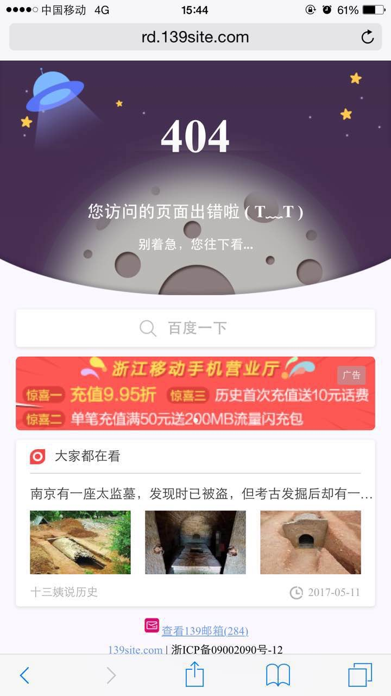

问题现象
问题发现：网站改版升级后，原URL会失效，所以我们在tomcat中将404错误指向error.jsp页面，此页面加载后发起重定向到新的首页。
在wifi环境下测试正常，使用错误URL访问能正常跳转。但是在移动4G网络下发现无法进行正常跳转，而是进入下述图片中的页面。

问题分析
这是第一次遇到这种问题，经过网上查资料，学到了 响应码劫持 这个新词汇。意思是攻击者在发现response头中的status为404、500等异常时，将响应的数据进行修改的劫持手段。
在这个场景中，浙江移动就是为了推广自己的产品，而将404错误劫持到其定义的页面上。忽视了网站本身对404错误响应的body中还会有逻辑处理的场景，导致网站访问出现异常。
对于这种行为，我只想说 呵呵！
问题解决
通过上述分析，确定问题原因是在响应码上，那么应对起来就简单多了。我们只需要将响应码强制修改成200就好了。在error.jsp中我们通过如下代码强制修改响应码：
<%
response.setStatus(200);
%>
注：我们第一次修改并没有成功，后面将代码加在
</body>前面就可以了，原因未知。
其它分析
后面我做了https的404错误测试，发现浙江移动就不会进行劫持，所以还是应该尽量使用https。